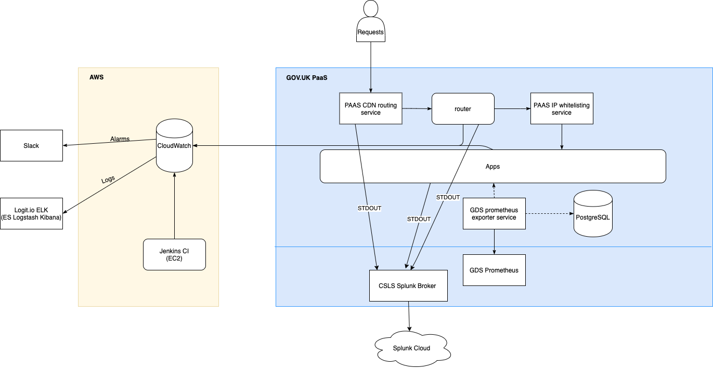

Logging, monitoring and alerting¶
Contents
Logging¶
Logs are handled by AWS CloudWatch and a number of ELK stacks hosted by Logit.io. Cloudwatch is the main and the only permanent storage for logs. From Cloudwatch, recent log messages (excluding GOV.UK PaaS Router logs) are streamed to Logit stacks. This allows us to use Kibana to query and visualize log data from the past few weeks.
In addition, we stream logs from PaaS to a Cyber Security managed Splunk Cloud instance. This ingests both PaaS Router logs and App logs sent to STDOUT via the CSLS Splunk Broker.
Developers are free to use any of these logging tools to meet the task at hand.
(The diagram above is based on the larger Application architecture diagram. The diagram source can be opened using draw.io in Google Drive if it needs to be edited.)
Accessing Kibana¶
There’s a separate Logit stack with Kibana 5.6 for each environment. Access to stacks is managed by creating individual accounts for each user. Once you have an account, the stacks can be accessed by selecting Logit from the Apps list in your Google account.
Searching logs in Kibana¶
You can query and filter log data using Kibana’s Discover page and Lucene query syntax.
There are some saved searches, visualizations and dashboards that should cover the common queries (application logs, error logs, slow queries etc) and you can always store your own searches for later.
Moving saved searches/settings between Kibana instances¶
Having the same set of saved searches on all environments can be convenient. You can use digitalmarketplace-aws/kibana Makefile to backup and restore the settings between environments:
STAGE=preview make dump
STAGE=staging make restore
Note
This will replace all Kibana settings, so try to make sure you’re not overwriting someone else’s changes on the target environment.
Viewing logs in Cloudwatch¶
Sign in to the AWS console
Switch role to be a developer in the correct account (depending on which logs you want)
Navigate to the CloudWatch service
In the left navigation click Logs
The ‘Log Group’ describes the environment/type. See below for more info.
The ‘Log Stream’ contains logs from a particular instance. The stream name is the hostname of the instance.
When looking at a specific stream there is a single search box which can be used to filter the log entries. Most of our streams contain JSON logs, so you should use the JSON search syntax.
Accessing Splunk¶
Access to Splunk is managed by the GDS IT team.
Raise a ticket on the GDS Helpdesk containing the following:
Please provide Splunk access to the following role: ‘gds-021_digital-marketplace’ for <DEVELOPER EMAIL ADDRESS>.
Once this is actioned check you can access Splunk at https://gds.splunkcloud.com/en-GB/app/gds-021-digitalmarketplace/search
Searching logs in Splunk¶
Start at https://gds.splunkcloud.com/en-GB/app/gds-021-digitalmarketplace/search
Prefix your query with
index=digital_marketplacethis will limit your query to logs provided from our PaaS instances (both router and app logs)
You may find the Splunk Quick Reference Guide useful to understand Splunk concepts and query syntax.
Log groups¶
- /aws/lambda/<environment>-log-stream-lambda
Logs generated by the lambda function used to stream logs from Cloudwatch
- cloudtrail
Cloudtrail logs
- <environment>-<application>-nginx
Access JSON logs from the nginx running directly in front of individual apps. In the case of the router app, this is the main nginx proxy logs.
- <environment>-<application>-application
Application JSON logs generated by the app.
- <environment>-nginx-json
Deprecated. These logs were JSON access logs from the main nginx reverse proxy auto scaling group before we migrated to the new router app hosted by the PaaS. These are kept for long term storage.
- sns/<region>/<aws account id>/s3_file_upload_notification_<environment>
Logs of SNS delivery attempts notifying the antivirus api of file uploads to certain buckets
Zipkin & Tracing¶
Http-handling apps on digital marketplace support Zipkin headers and where possible use these to annotate the following fields onto all log messages that they emit.
requestId(which is driven by the zipkin “trace id” and should probably be renamed as such at some point)
spanId
parentSpanId
isSampled
debugFlag
In cases where a new onwards request is made an extra childSpanId field is added denoting the assigned span id of
the new request.
These fields being propagated across internal requests and annotated onto standard log messages allows the logdia tool to piece together events related to a request in a graphical form given a dump of json log data obtained from kibana.

Sampling & Debugging¶
The isSampled and debugFlag fields of log entries are controlled by their respective zipkin headers. These are
manually settable on requests from GDS IPs, but additionally our
router app randomly sets a small proportion (at time of
writing 1 in 256) of incoming requests as isSampled to allow us to build up a background reference of requests’
performance-related behaviour and give us a good likelihood of some requests that are part of a “storm” being provided
with extra diagnostic information.
The actual meaning of these flags and their observance by the app is really up to the developer. Broadly, the “sampled” flag should be used to increase the log verbosity for a particular request, particularly adding information or extra log entries that would aid in timing and determining performance characteristics. It should not do this to an excessive degree or output log messages which would themselves degrade the performance of the request as this flag is set on real users’ requests (such degradation would of course also defeat our ability to get a realistic view of a request’s performance). Another ramification of this flag being set on real users’ requests is that developers should stick to “the rules” on including Personally Identifiable Information in these messages.
The “debug” flag instructs an app to go a step further and include information that would normally be considered too verbose to emit regularly but would aid in trying to debug the actions of a request in a live environment.
Monitoring¶
Prometheus monitoring dashboards¶
Reliability Engineering provide us with Prometheus servers and Grafana dashboards for visualisation.
Tip
When creating new widgets on a Grafana dashboard consider if it needs to handle blue-green deployments. You can see how to combine metrics for apps deploying and retiring in the _RE monitoring documentation.
Prometheus sources¶
Generic RE metrics¶
Default metrics for each app/stage are collected using the PaaS Prometheus Exporter app. This includes the following:
Disk usage (bytes and %)
CPU usage (%)
App instance crashes
Memory usage
500 status requests
Request duration
The Prometheus exporter app also collects stats for the database backing service attached to the API app, including transactions, connections, I/O and cache hits.
The raw metrics are visible at https://digitalmarketplace-paas-prometheus-exporter.cloudapps.digital/metrics (access is whitelisted to GDS IPs). The Grafana dashboards (see below) are used to visualise this data.
Setting up the Prometheus exporter app¶
The Prometheus exporter app itself is run on PaaS, in the monitoring space. Detailed instructions on how the
exporter app is set up can be found in the
PaaS documentation.
To deploy or update an instance of the exporter app a developer should clone the repo, define the relevant variables
in the manifest.yml (in this case the USERNAME and PASSWORD of the
PaaS user,
the app name - name: digitalmarketplace-paas-prometheus-exporter and the
API_ENDPOINT=https://api.cloud.service.gov.uk) which will then scrape our app instances for metrics.
Clone and prepare the repo:
cf target -s monitoring
git clone https://github.com/alphagov/digitalmarketplace-credentials.git
cd digitalmarketplace-credentials
Make the relevant changes to the manifest.yml then:
cf push -f manifest.yml digitalmarketplace-paas-prometheus-exporter
You should then be able to hit the metrics page at https://digitalmarketplace-paas-prometheus-exporter.cloudapps.digital/metrics
This app is IP whitelisted
using the GDS re-ip-whitelist-service available on the PaaS marketplace (cf marketplace) deployed using the
command:
cf create-user-provided-service re-ip-whitelist-service -r https://re-ip-whitelist-service.cloudapps.digital
cf bind-route-service cloudapps.digital re-ip-whitelist-service --hostname digitalmarketplace-paas-prometheus-exporter
The above is only necessary on initial set up.
Once the app is up and running and collecting metrics we need to bind the prometheus service to the app:
cf create-service gds-prometheus prometheus digitalmarketplace-prometheus
cf bind-service digitalmarketplace-paas-prometheus-exporter digitalmarketplace-prometheus
Updating the Prometheus exporter app¶
Similarly to above we need to clone the repo and target the correct stage. After that we can just push without a manifest to preserve the current environment variables that are set:
cf target -s monitoring
git clone https://github.com/alphagov/paas-prometheus-exporter.git
cd paas-prometheus-exporter
cf push --no-manifest digitalmarketplace-paas-prometheus-exporter
Custom app metrics¶
To capture information about individual requests or endpoints on an app, we need to publish custom metrics. This involves:
Creating a metrics blueprint and endpoint on the app, using the dmutils.metrics
DMGDSMetricsclass (based on the GDS Metrics Python library). See an example of the endpoint and blueprint on the brief-responses-frontend app.Adding the
/_metricsroute and thedigitalmarketplace_prometheusbacking service to the app’s manifest. See the vars for the brief-responses-frontend app)Adding the
re-ip-whitelist-serviceroute service to restrict access to the app’s/_metricspath with:cf bind-route-service cloudapps.digital re-ip-whitelist-service --hostname dm-<stage> --path /<app_route>/_metrics
The prometheus exporter app can then access the raw custom metrics at https://api.preview.marketplace.team/_metrics (adjust for app/stage accordingly). Developers can bypass the whitelisting and view the metrics at https://api.preview.cloudapps.digital/_metrics.
Currently we only have a Grafana dashboard visualisation for the Brief Responses Frontend custom metrics.
Grafana dashboards¶
We have dashes for viewing our metrics hosted by Reliability Engineering. Any metric in Prometheus is available to graph in Grafana. These dashes also record their complete history of changes so reverting to old versions is simple if an update doesn’t go according to plan.
To view the dashes sign in using your cabinet-office.gov.uk email. To edit the Digital Marketplace dashes a current
team member will need to add you to the Digital Marketplace ‘team’.
Alerting¶
Cloudwatch alerts¶
We have alerts set up in CloudWatch for several metrics. If these alerts are triggered then we are notified via the #dm-2ndline Slack channel.
We have basic alerts for:
production 500s
production 429s
production slow requests
We also have alerts set up to indicate a problem with our logging or metric shipping. These should alert us if we have no logs added to CloudWatch log groups for 15 minutes for each environment and application. Coverage by health checks and smoke tests should mean we only alert if something goes wrong with our logging rather than a lack of traffic. These are set up programatically in the alarms sub-module of the logging module in terraform.
Any triggered alerts should be investigated by 2nd line developers.
Pingdom Alerts¶
We have a Pingdom account which checks our website every minute and notifies us by email within a minute of noticing an app being down.
We have checks running on the status pages for our five public front end apps. We have both an IPv4 and IPv6 version of
our checks. Note, we do not have checks on the API, search API or admin front end as the status pages are not
accessible to the public however the status of the api and search-api can be inferred by the buyer-frontend
check which requests the status page with its dependencies (the api and search-api)
If a check fails, then an email is sent to both the support@digitalmarketplace.service.gov.uk and
digital-marketplace-development@digital.cabinet-office.gov.uk google groups.
To log in to Pingdom use the details in the password file digitalmarketplace-credentials/pass/pingdom.com/digitalmarketplace.
Grafana Alerts¶
We have two Grafana alerts described as code that trigger based on these metrics:
the number of 200 requests on the router app
custom metrics on the Brief Responses FE (we intended to roll out to other FE apps, but we haven’t found the time yet)
There may be other ad-hoc/temporary alerts (not described as code) - you can view all of them on the DM Alarms dashboard.
NCSC WebCheck¶
We have a shared account with NCSC’s WebCheck service that can be found in the password file digitalmarketplace-credentials/pass/webcheck.service.ncsc.gov.uk/digitalmarketplace.
This service is, as of February 2018, still quite new and does not offer an extensive set of features, but it will continually monitor our site to give some assurance that our service is not vulnerable to major exploits or lacking obvious security hardening.
By default, we are on the quiet package (the ‘noisy’ package is still under development), which means it makes very few requests to our site and so does not degrade performance in any way. It will e-mail us when it notices a finding which it categories as ‘advisory’ or higher, so we should not need to monitor the dashboard manually.